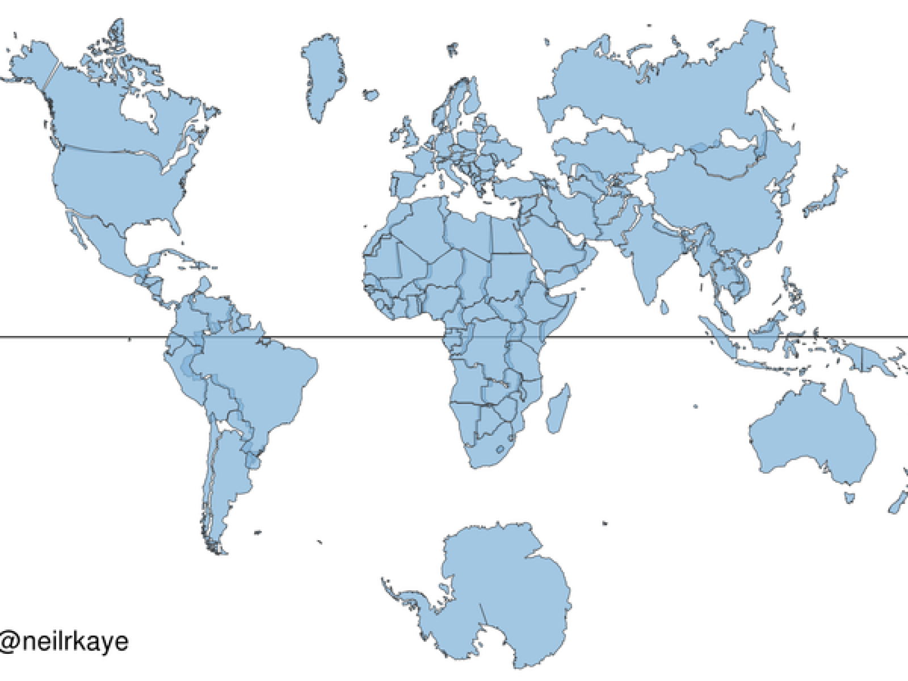
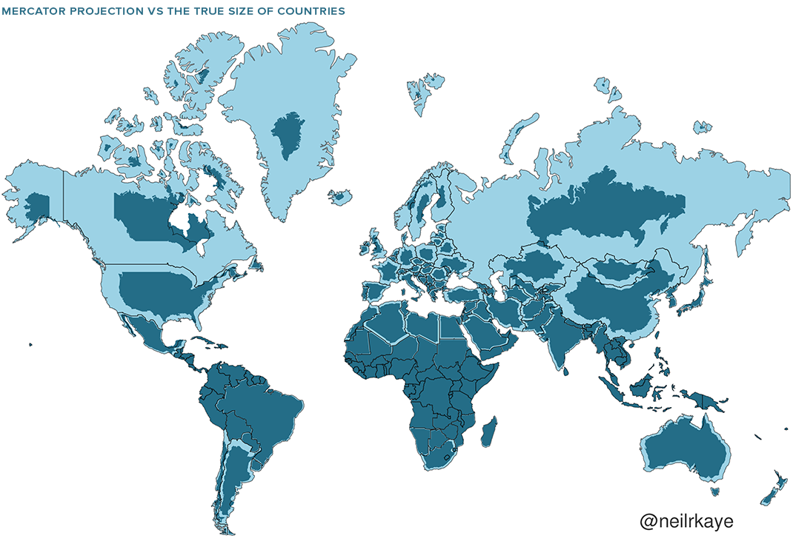

Notebook JonnyTang
1
Intro 简介
2
Australia
3
Sydney
4
UNSW
5
殖民地
6
World
7
World real size
8
爸爸的记录
9
Notes 2022
9.1
Jan - March
9.1.1
NSW新州数学教学体系2
9.1.2
NSW新州数学教学体系1
9.1.3
Sydney Grammar School悉尼文法学校申请
With bookdown
My book with maps & geo 悉悉的地图和地理
Chapter 7
World real size

World real size

World real size